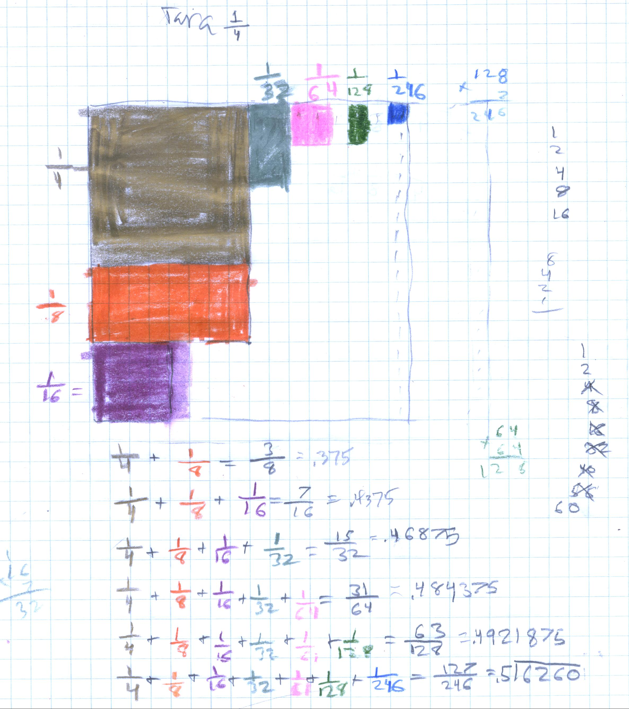
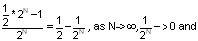
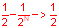

Tara, a 6th grader, creates an infinite series
Without any direction from Don, Tara T created the following infinite series:

Tara had done 1/2 + 1/4 + 1/8 +... before, as well as 1/3 + 1/9 + 1/27 +...The interesting thing she did was to start with 1/4, then take 1/2 of each piece after that. And she realized that the one she did above, was 1/2 less than 1, and would approach 1/2 !! This couldn't be Don showed her, because she got .516260... for the last partial sum, which is greater than 1/2. They talked about this and she realized she had made a error getting the last denominator; it should be 1/256. The partial sum came out to be 0.49609375... and she was correct that the infinite series goes to 1/2!!!
Fine work Tara!!
Tara had said that to get the top number in the partial sum, just take 1/2 of the bottom, them subtract 1. Don wrote this as


So the sequence of partial sums goes to 1/2.